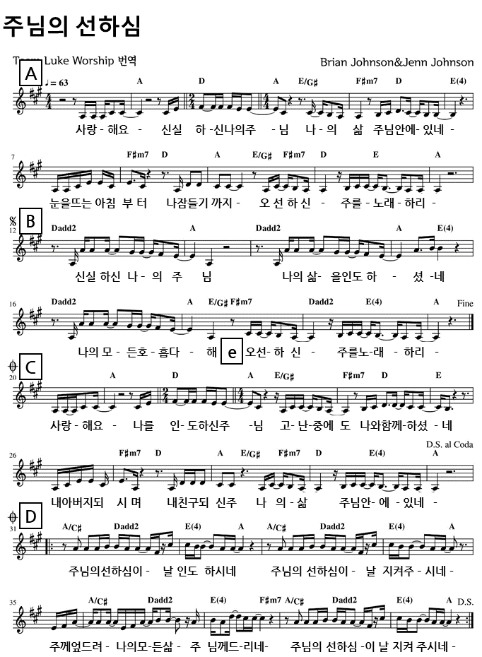
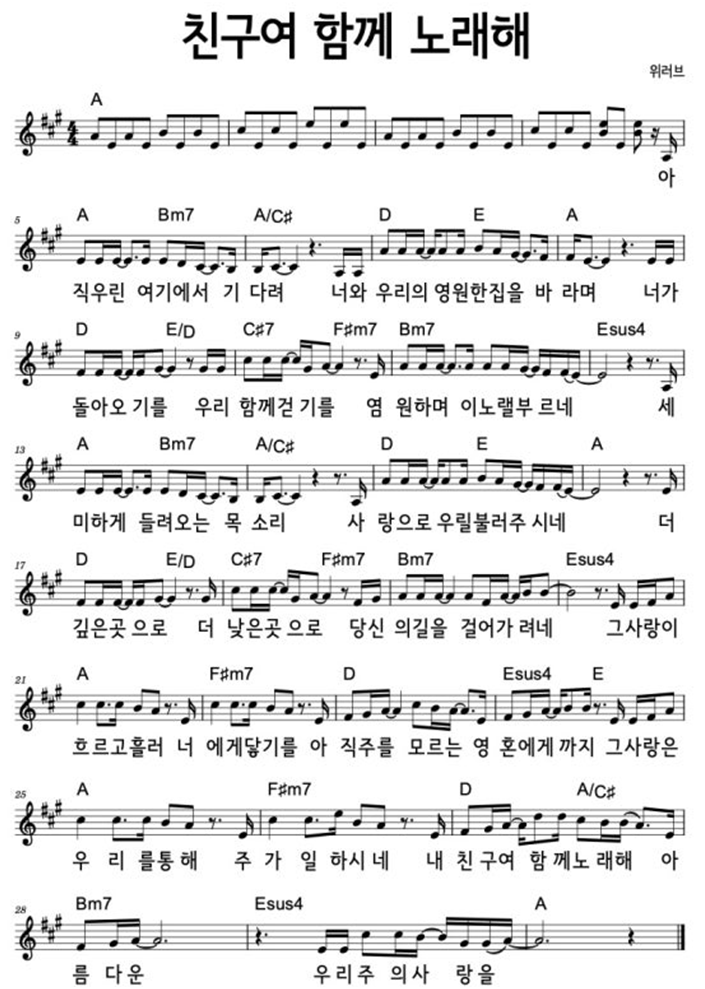
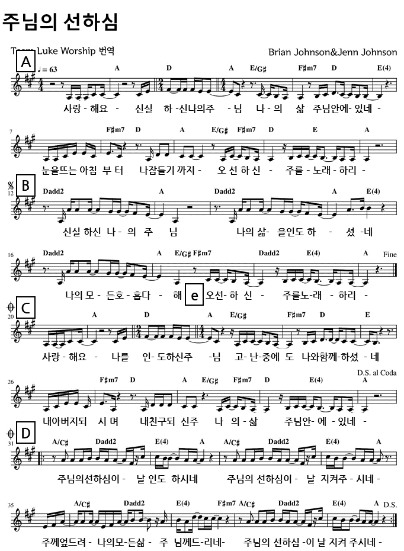
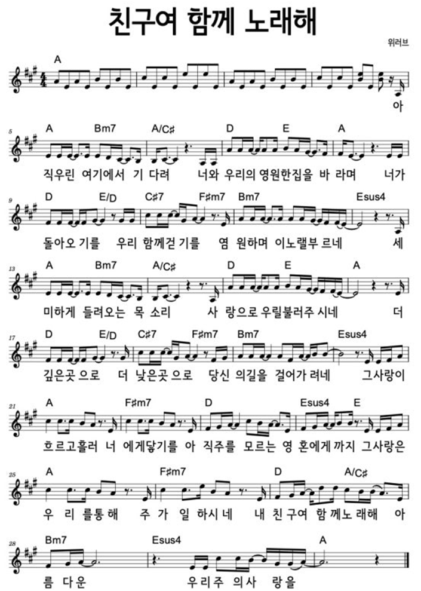

1 내 아들아 나의 법을 잊어버리지 말고 네 마음으로 나의 명령을 지키라
2 그리하면 그것이 네가 장수하여 많은 해를 누리게 하며 평강을 더하게 하리라
3 인자와 진리가 네게서 떠나지 말게 하고 그것을 네 목에 매며 네 마음판에 새기라
4 그리하면 네가 하나님과 사람 앞에서 은총과 귀중히 여김을 받으리라
5 너는 마음을 다하여 여호와를 신뢰하고 네 명철을 의지하지 말라
6 너는 범사에 그를 인정하라 그리하면 네 길을 지도하시리라
7 스스로 지혜롭게 여기지 말지어다 여호와를 경외하며 악을 떠날지어다
8 이것이 네 몸에 양약이 되어 네 골수를 윤택하게 하리라
9 네 재물과 네 소산물의 처음 익은 열매로 여호와를 공경하라
10 그리하면 네 창고가 가득히 차고 네 포도즙 틀에 새 포도즙이 넘치리라
11 내 아들아 여호와의 징계를 경히 여기지 말라 그 꾸지람을 싫어하지 말라
12 대저 여호와께서 그 사랑하시는 자를 징계하시기를 마치 아비가 그 기뻐하는 아들을 징계함 같이 하시느니라
13 지혜를 얻은 자와 명철을 얻은 자는 복이 있나니
14 이는 지혜를 얻는 것이 은을 얻는 것보다 낫고 그 이익이 정금보다 나음이니라
15 지혜는 진주보다 귀하니 네가 사모하는 모든 것으로도 이에 비교할 수 없도다
16 그의 오른손에는 장수가 있고 그의 왼손에는 부귀가 있나니
17 그 길은 즐거운 길이요 그의 지름길은 다 평강이니라
18 지혜는 그 얻은 자에게 생명 나무라 지혜를 가진 자는 복되도다
19 여호와께서는 지혜로 땅에 터를 놓으셨으며 명철로 하늘을 견고히 세우셨고
20 그의 지식으로 깊은 바다를 갈라지게 하셨으며 공중에서 이슬이 내리게 하셨느니라
21 내 아들아 완전한 지혜와 근신을 지키고 이것들이 네 눈 앞에서 떠나지 말게 하라
22 그리하면 그것이 네 영혼의 생명이 되며 네 목에 장식이 되리니
23 네가 네 길을 평안히 행하겠고 네 발이 거치지 아니하겠으며
24 네가 누울 때에 두려워하지 아니하겠고 네가 누운즉 네 잠이 달리로다
25 너는 갑작스러운 두려움도 악인에게 닥치는 멸망도 두려워하지 말라
26 대저 여호와는 네가 의지할 이시니라 네 발을 지켜 걸리지 않게 하시리라
27 네 손이 선을 베풀 힘이 있거든 마땅히 받을 자에게 베풀기를 아끼지 말며
28 네게 있거든 이웃에게 이르기를 갔다가 다시 오라 내일 주겠노라 하지 말며
29 네 이웃이 네 곁에서 평안히 살거든 그를 해하려고 꾀하지 말며
30 사람이 네게 악을 행하지 아니하였거든 까닭 없이 더불어 다투지 말며
31 포학한 자를 부러워하지 말며 그의 어떤 행위도 따르지 말라
32 대저 패역한 자는 여호와께서 미워하시나 정직한 자에게는 그의 교통하심이 있으며
33 악인의 집에는 여호와의 저주가 있거니와 의인의 집에는 복이 있느니라
34 진실로 그는 거만한 자를 비웃으시며 겸손한 자에게 은혜를 베푸시나니
35 지혜로운 자는 영광을 기업으로 받거니와 미련한 자의 영달함은 수치가 되느느니라
 


